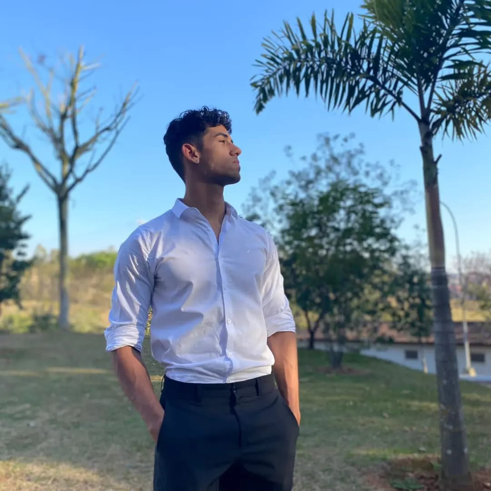

- Home
- >
- Currículo
Currículo
Dados Pessoais

Nome:
Pedro Lucas Prado e Silva
Data de Nascimento:
31/08/2001
Residência:
Itajubá, Brasil
Idiomas:
Português (Nativo)
Inglês intermediario
Sobre Mim
Meu nome é Pedro Lucas, tenho 22 anos e atualmente estou cursando Engenharia de Controle e Automação na UNIFEI (Universidade Federal de Itajubá). Desde que entrei na universidade, tenho mergulhado de cabeça no fascinante mundo da automação e controle, onde descobri minha verdadeira paixão. Além dos estudos, sou apaixonado por programação. Considero a habilidade de programar como uma das ferramentas mais poderosas para criar soluções inovadoras e eficientes. Tenho investido tempo e energia em aprimorar minhas habilidades nessa área, buscando sempre novos desafios e projetos que me permitam explorar ao máximo meu potencial como programador. Acredito que a combinação entre minha formação em Engenharia de Controle e Automação e minha habilidade em programação me proporciona uma base sólida para enfrentar os desafios e as demandas do mundo atual, que está cada vez mais dependente de soluções tecnológicas inovadoras e eficientes. Estou sempre em busca de novos conhecimentos e oportunidades para aplicar o que aprendo. Seja em projetos acadêmicos, desafios de programação ou iniciativas que visam melhorar processos e sistemas, estou motivado a contribuir de forma significativa para o avanço da tecnologia e da automação.
Educação
2023 -> 2028
Engenharia de Controle e Automação-Graduação-UNIFEI
2021 ->2023
Técnico em desenvolvimento de Sistemas-Técnico-SENAI
2020
Curso de Preparação de Oficiais da Reserva-EB
Habilidades
Soft Skills
Liderança / Espírito de equipe / Determinação
Hard Skills
Programação / Contabilidade / Mecânica
Linguagens de Programação
C# / HTML-CSS / Python
Experiência de Trabalho
No one yet
Contato
pedrolucasps88@outlook.com
35 987052269
⇐Voltar ao início